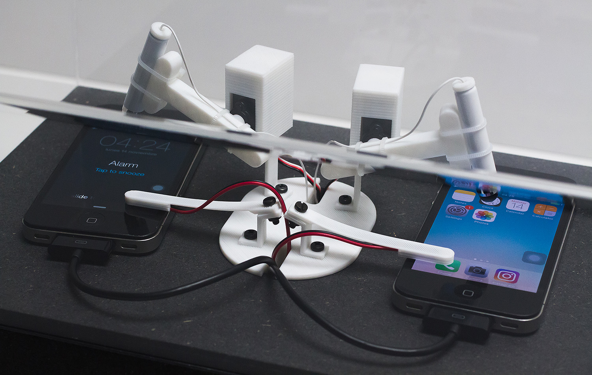

←
Daniel Armengol Altayó
Sleep disorder, 2016
Robot
Machines becoming more and more human and increasingly mechanical individuals. Two gestures repeated non-stop, in a monotonous and predictable dance.
Who awakens whom? Who represses the sleep of whom?
Habits and automata. Roles mixed up.

When and where
02/06/17 → 04/06/17
El laboratorio del no hacer
, Blueproject Foundation, Barcelona, ES.
22/10/16
Internet Yami-ichi
, The Influencers, CCCB, Barcelona, ES.
More material
Photo
gallery.